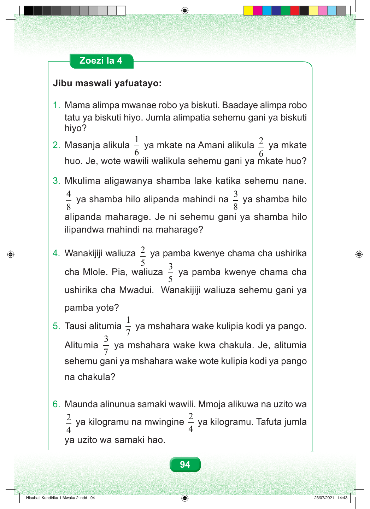

Zoezi la 4 Jibu maswali yafuatayo: 1. Mama alimpa mwanae robo ya biskuti. Baadaye alimpa robo tatu ya biskuti hiyo. Jumla alimpatia sehemu gani ya biskuti hiyo? 1 2 2. Masanja alikula ya mkate na Amani alikula ya mkate 6 6 huo. Je, wote wawili walikula sehemu gani ya mkate huo? 3. Mkulima aligawanya shamba lake katika sehemu nane. 4 3 ya shamba hilo alipanda mahindi na ya shamba hilo 8 8 alipanda maharage. Je ni sehemu gani ya shamba hilo ilipandwa mahindi na maharage? 2 4. Wanakijiji waliuza ya pamba kwenye chama cha ushirika 5 3 cha Mlole. Pia, waliuza ya pamba kwenye chama cha 5 ushirika cha Mwadui. Wanakijiji waliuza sehemu gani ya pamba yote? 1 5. Tausi alitumia ya mshahara wake kulipia kodi ya pango. 7 3 Alitumia ya mshahara wake kwa chakula. Je, alitumia 7 sehemu gani ya mshahara wake wote kulipia kodi ya pango na chakula? 6. Maunda alinunua samaki wawili. Mmoja alikuwa na uzito wa 2 2 ya kilogramu na mwingine ya kilogramu. Tafuta jumla 4 4 ya uzito wa samaki hao. 94 Hisabati Kundirika 1 Mwaka 2.indd 94 23/07/2021 14:43